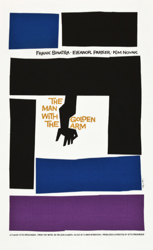
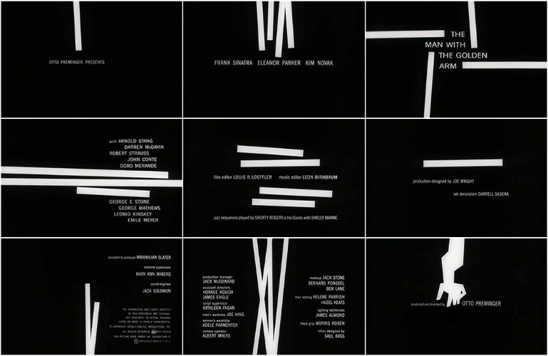
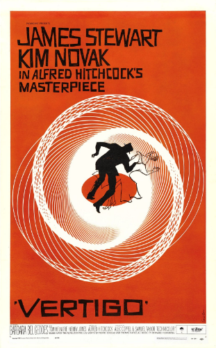
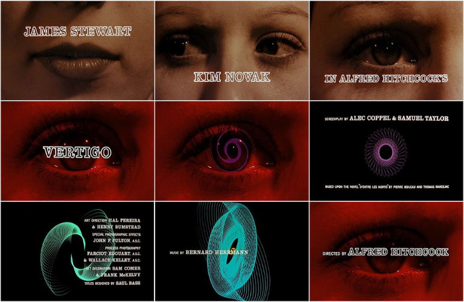
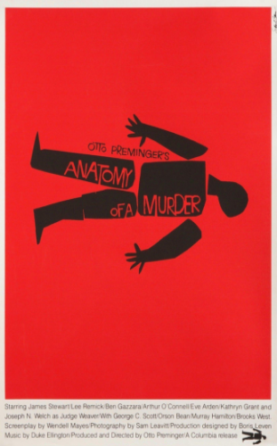
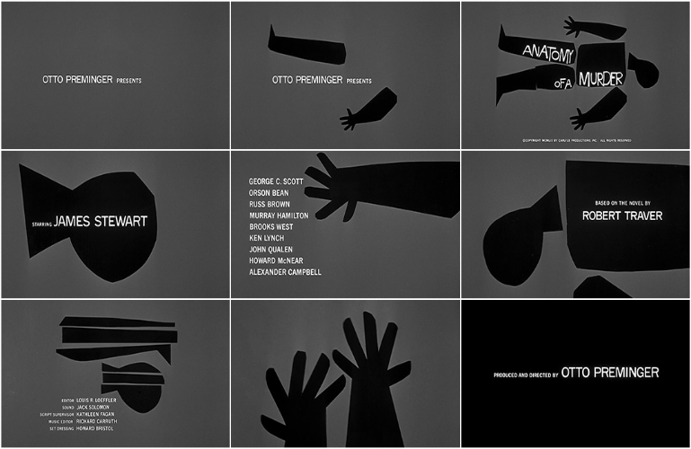

The Man With The Golden Arm
Saul Bass / 1955
[황금팔을 가진 사나이]는 마약중독자이자 도박사인 프랭키 머신(프랭크 시나트라Frank Sinatra 역)이 사랑의 힘으로 마약을 극복해내는 과정을 그린 영화다. 그는 도박장에서 뛰어난 솜씨 때문에 ‘황금팔을 가진 사나이’라는 별명을 갖고 있다. 빠르고 능수능란한 팔이지만, 그 팔은 마약 주사를 맞는 팔이기도 하다.
솔 바스는 이런 이야기에 착안해 비뚤어진 팔을 영화의 그래픽 아이덴티티로 삼고 이를 포스터와 타이틀 시퀀스, 그리고 각종 홍보물에도 적용했다. 포스터에는 주연 배우들의 얼굴이 나오지 않으며 글자로만 표기되었다. 그것도 아주 작은 글씨로. 삐뚤어진 팔과 커다란 면을 그래픽 요소로 단순하게 디자인된 포스터에는 눈에 띄지 않지만 디자이너인 솔 바스의 이름도 들어가 있다. 할리우드에서 거의 모든 영화 포스터는 익명으로 디자인되었으므로 이 또한 커다란 변화였다. 타이틀 시퀀스는 막대 형태의 그래픽 요소가 움직이면서 배우와 스텝 이름이 나열되게 디자인했다. 영화 타이틀에 이런 그래픽 요소로 움직임을 부여한 것도 솔 바스가 처음 선보인 것이다. 이런 급진적인 변화는 영화가 생긴지 거의 50년 만에 일어난 일이다. 다른 건 몰라도 영화 포스터만큼은 낙후되어 있었다.
Vertigo
Saul Bass / 1958
이 영화는 나쁜 사업가의 음모와 계략이 있고, 그에게 이용당하는 남자 주인공과 그를 속일 목적으로 접근하지만 결국 그를 사랑하게 되는 여자와의 이루어질 수 없는 사랑 이야기가 있는 복잡한 구조를 띠고 있다. 제임스 스튜어트(James Stewart)가 연기하는 주인공 스코티는 친구가 창조한 허상인 여자를 사랑한다. 킴 노박(Kim Novak)이 연기하는 주디는 ‘매들린’이라는 허상의 여인으로 행세하며 스코티와 가짜 사랑을 나누는데, 그게 진짜 사랑이 돼버린다.
솔 바스는 [현기증]의 이런 복잡하고 미묘하며 수수께끼 같은 분위기를 소용돌이치는 기하학적 패턴으로 상징했다. 포스터에 등장하는 붉은색 바탕에 일정한 간격으로 소용돌이치는 흰색 패턴은 영화의 타이틀 시퀀스에서도 똑같이 적용되었다. 타이틀 시퀀스에서는 버나드 허먼이 작곡한 기분이 묘한 음악을 배경으로 어마어마하게 클로즈업된 킴 노박의 눈에서 소용돌이 패턴이 점점 확대되어 나온다. 이 패턴은 계속해서 커지다가 사라지고 또다시 다양한 형태의 소용돌이들이 빙글빙글 돌며 등장한다. 미스터리 심리 스릴러물의 타이틀 시퀀스로서 이처럼 독창적이고 묘하게 아름다운 영상은 당시 관객들에게 신선한 충격을 주었다.
Anatomy Of A Murder
Saul Bass / 1959
오토 프레밍거(Otto Preminger)와 솔 바스(Saul Bass)의 인연은 [황금팔을 가진 사나이]로 시작해 [살인의 해부]로 절정에 달한다. 오토 프레밍거는 영화의 사전 홍보가 흥행에 큰 도움이 된다는 것을 직감한 몇 안 되는 감독이다. 그는 영화의 기획부터 제작하는 과정까지 모든 것을 언론에 공개하기로 마음먹었다. 따라서 그런 외부 공개용 문서에서부터 영화를 상징하는 어떤 디자인을 적용할 필요성을 느꼈다. 그리고 홍보 전략이 효과적이려면 그 심벌 디자인이 사람들의 눈을 잡아 끌고 잘 기억되는 단순하고 독특한 형태여야 했다. 그는 영화 대본이 나오기도 전에 이 일을 솔 바스에게 의뢰한다. 심벌이 만들어지면 그걸 활용해 외 부에 공개하는 모든 문서에서부터 일관성 있게 적용하려고 했던 것이다.
[살인의 해부]는 제임스 스튜어트(James Stewart)가 영리한 변호사로 나와 한 살인사건의 진실을 파헤치 는 영화다. 솔 바스는 ‘살인의 해부’라는 제목에 착안해 실루엣으로 처리된 인체 심벌을 디자인한다. 이 심벌은 내부 문서인 대본의 표지에도 적용되었으며, 언론 공개 문서, 타이틀 시퀀스, 그리고 포스터와 각종 홍보물에 차례로 적용되었다. 타이틀 시퀀스에서는 이 검정색 인체 심벌이 머리, 다리, 팔, 몸통으로 각각 해체되면서 그 안에 정보가 나오는 영상으로 디자인되었다.